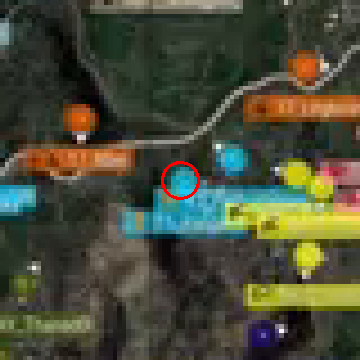
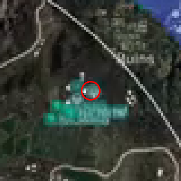
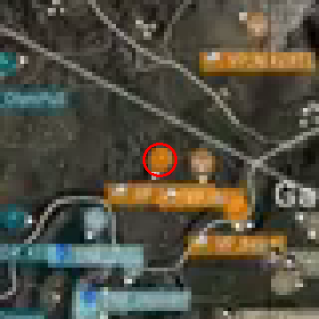
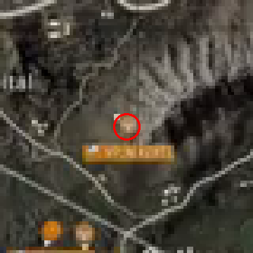
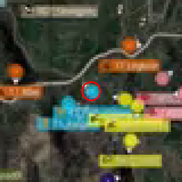
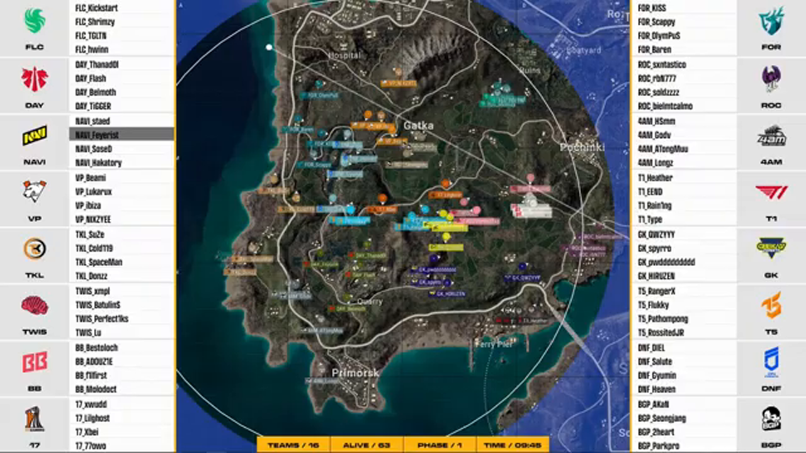

영상 GO25rM_CoHo · sec=4230 (1시간 10분 30초 지점) · SIFT reprojection 오차 0.30px (≈2m)
검출 선수 마커자기장 원






줌인은 360p 영상을 5배 확대한 거라 거칠어. 동그라미 한가운데에 선수 마커(작은 점·삼각형)가 있으면 정확히 찍힌 거야.
| # | 종류 | 신뢰도 | 화면 픽셀(px,py) | 지도 좌표(gx,gy) | 가까운 도시 | 자기장 거리 | 팀색 |
|---|---|---|---|---|---|---|---|
| 1 | vehicle | 0.93 | 326, 171 | 0.259, 0.570 | Gatka | 741 m | blue |
| 2 | airplane | 0.67 | 401, 70 | 0.361, 0.432 | Ruins | 272 m | blue |
| 3 | player | 0.48 | 292, 91 | 0.211, 0.460 | Gatka | 484 m | yellow |
| 4 | vehicle | 0.36 | 401, 70 | 0.361, 0.432 | Ruins | 274 m | blue |
| 5 | player | 0.34 | 316, 58 | 0.244, 0.415 | Hospital | 472 m | orange |
| 6 | vehicle | 0.34 | 337, 166 | 0.273, 0.563 | Gatka | 681 m | green |
kind=player(static)인 3·5번만. 나머지(vehicle/airplane)는 이동 중이라 명당 계산에서 빠져.검증 기준: 동그라미가 선수 위에 정확히 있고, 도시·거리가 맞으면 통과. 어긋나면 알려줘 — 좌표 파이프라인을 다시 봐야 해.